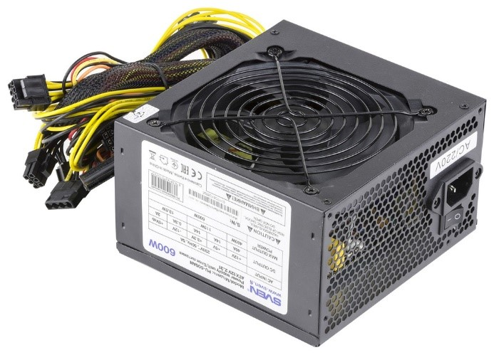

То, что постоянно на виду. Прекрасный (не всегда), вместительный(не всегда) «ящик», внутри которого вы расположите все выбранные комплектующие.
Материнская платаЭто плата, которая является связующим звеном между всеми элементами компьютера, именно к ней подключаются все остальные комплектующие.
ПроцессорУправляет всеми вычислительными процессами. Выглядит как маленький квадратик, имеющий снизу контакты.
 Блок питания
Блок питания
Элемент ПК, похожий на коробку, который получает энергию от общей электросети и питает все компоненты компьютера.
 Оперативная памятьЭто очень быстрая временная память компьютера, в которой хранится информация о выполняемых в конкретный момент задачах.
Жесткий диск или SSDЗдесь компьютер хранит всю информацию: установленную систему, игры, программы, презентации. SSD быстрее чем жесткий диск, поэтому на него чаще всего ставят операционную систему.
Элементы охлажденияМожет быть сделана в виде вентилятора (кулера) со стальным или медным радиатором или жидкостной системы охлаждения («водянка»). Так же есть вентиляторы для охлаждения корпуса ПК.
ВидеокартаУстройство, отвечающее за преобразование битов и байтов информации в реальные визуальные образы, которые вы видите на мониторе. На ней также присутствуют вентиляторы для охлаждения чаще всего 1 или 2, также бывает 3 вентилятора, либо так называемая турбина.